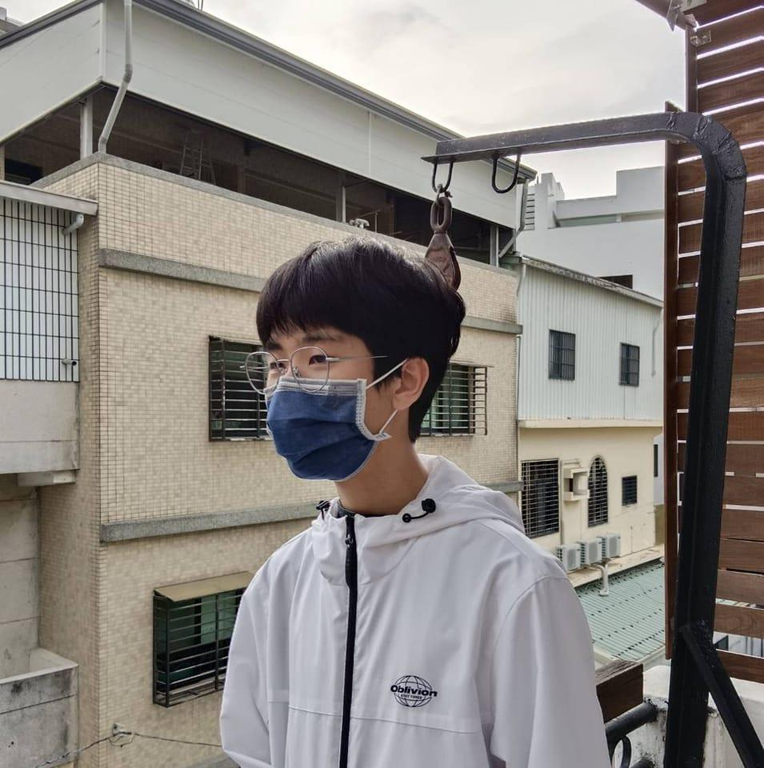

ABOUT ME

劉齊
3D Technical Artist / 數位媒體創作者
我是劉齊，就讀國立屏東大學視覺藝術學系數位媒體設計組，致力於NPR非寫實渲染的專研與精進，將2D手繪、3D建模與貼圖、技術美術的shader技術結合還原出手繪精神的追求。
📍 技能專長： Blender、Shader 節點邏輯
✉️ 聯絡方式： t0908100039.email@gmail.com

我是劉齊，就讀國立屏東大學視覺藝術學系數位媒體設計組，致力於NPR非寫實渲染的專研與精進，將2D手繪、3D建模與貼圖、技術美術的shader技術結合還原出手繪精神的追求。
📍 技能專長： Blender、Shader 節點邏輯
✉️ 聯絡方式： t0908100039.email@gmail.com